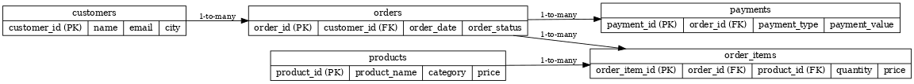

Power BI Dashboard
A preview of the interactive dashboard pages, which highlight key performance indicators (KPIs), sales trends over time, customer segmentation by value, and product performance analysis.


An end-to-end data pipeline project covering SQL, Python, and Power BI to transform raw data into actionable insights.
This project demonstrates the complete workflow for analyzing e-commerce sales data:
The schema illustrates the relational structure of the e-commerce dataset, detailing tables for orders, products, customers, and payments to ensure data integrity and efficient querying.

A preview of the interactive dashboard pages, which highlight key performance indicators (KPIs), sales trends over time, customer segmentation by value, and product performance analysis.
Access the core project files, including the SQL scripts for database setup and the Jupyter Notebook for the data cleaning process.
This project successfully demonstrates how a combination of standard industry tools—SQL, Python, and Power BI—can create a robust and scalable workflow. By transforming raw, unstructured e-commerce data into a clean, relational format and visualizing the results, we can uncover actionable business insights that drive strategic decision-making and identify areas for operational improvement.